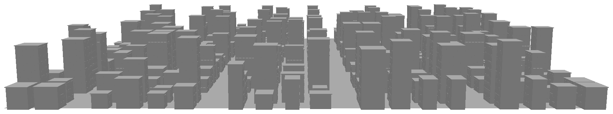
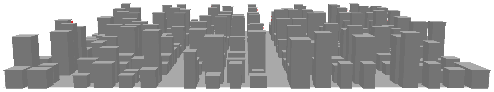
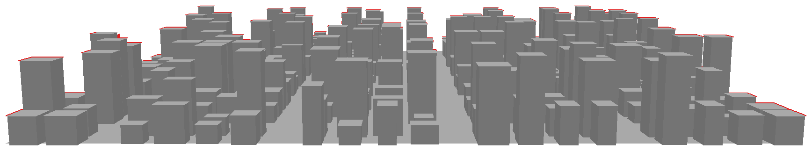
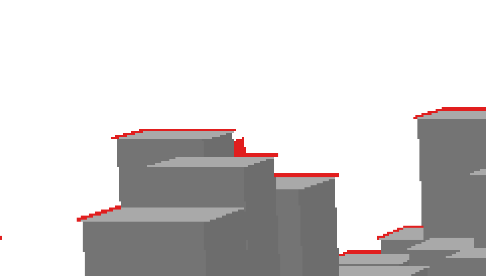
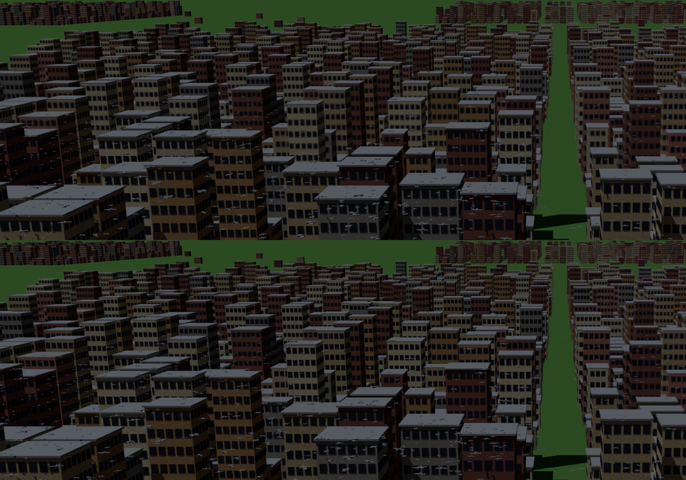

src/cook/far_proxy.rsThe cook of one Mesh per Chunk of a scene with a Far field, its Far proxy, and of the Material baked for it: the Chunk's static Placements merged about the Chunk's centre, each Placement that lies within a pixel of another's surface left out, the rest welded on position and simplified to one pixel of error at the Load radius; each planar face of that merge charted as a rectangle in one atlas, and the Chunk's sources rasterised into it along each face's normal as an albedo and a metallic-roughness Texture; the Chunk's ground tiles added whole as a second Primitive; with a LOD chain cut for it, and stored as a Mesh Blob, a Material Blob and two Texture Blobs under Asset IDs of their own.
Describes main at 53708600 (2026-11-21). What loads, holds and draws a Far proxy is on The Chunk streamer, Mip streaming and The lit pass. A rewrite of this page moves the commit; nothing is appended. Read first: Chunk cooking for Placements, a Chunk's bounds and how one Chunk is generated alone, Texture cooking for the Cook key, the Cooked cache and the mips a Texture cook filters, The Reference scenes for what world places, Camera-relative placement for a vertex's 128 m from its pivot.
cook · placedA Far proxy is cooked from source geometry, not from cooked Meshes: every Placement of the Chunk is placed as triangles about the Chunk's centre on the ground, which is the proxy's pivot, each triangle keeping its UVs and the Material it draws with, and the ground's Placements are set apart from the rest.
cook takes the Chunk as the Chunk cook generates it, each neighbouring Chunk with its origin from this one's, a lookup from a Mesh's Asset ID to its source Primitives, the Asset ID of the scene's ground Mesh, the Asset ID of the Material it bakes, and one pixel's size in metres. placed turns a Placement into triangles: each source position scaled and rotated in f32, as the Instance will be, then translated in f64 from the pivot and rounded to f32 once.
fn from_pivot(placement: &CookedPlacement, origin_from_pivot: DVec3, position: [f32; 3]) -> Vec3 {
let turned = placement.rotation * (Vec3::from(position) * placement.scale);
(origin_from_pivot + placement.translation + turned.as_dvec3()).as_vec3()
}from_pivot, src/cook/far_proxy.rs. For the Chunk's own Placements origin_from_pivot is minus the pivot, (128, 0, 128) m from the Chunk's origin; for a neighbour's it is that Chunk's origin from this one's, less the pivot.
The pixel is the one the proxy is judged at: a pixel's size at the scene's Load radius, on a target of 1,440 rows under the camera's 45° field of view. For world's 256 m that is 14.7 cm.
pub(super) fn pixel_metres(load_radius_metres: f64) -> f32 {
(load_radius_metres * 2.0 * (f64::from(FIELD_OF_VIEW) / 2.0).tan() / TARGET_ROWS) as f32
}pixel_metres, src/cook/far_proxy.rs.
Each triangle also records which Material it draws with, the Placement's override or else its Primitive's own, as an index into one list for the whole cook. Beside each Material the list keeps the fewest UV units a metre of any of its triangles spans (uv_per_metre, the square root of UV area over area), from which the bake later picks the mip it reads. A Placement the runtime does not draw records none: one without an override whose Mesh has a Primitive with triangles that names no Material. Its triangles still take part in the drop rule, but the bake reads nothing from them.
let drawn = placement.material.is_some()
|| (primitives.iter())
.all(|(geometry, material)| material.is_some() || geometry.indices.is_empty());placed, src/cook/far_proxy.rs.
A neighbour's Placement is placed only if it can reach the Chunk's own triangles: its pivot, widened by its Mesh's farthest vertex times its largest scale and by the bake's reach of two pixels, must touch the box that holds them. On world's densest Chunk, (−19, −3), that keeps a band of the neighbours' buildings and windows along each edge out of 29,941 Placements of its own.
let reach_metres = mesh_reach_metres * placement.scale.abs().max_element()
+ bake::reach_metres(pixel_metres);cook, src/cook/far_proxy.rs.
within_anotherA Placement leaves the proxy's geometry when every vertex of it lies within one pixel of the surface of one other Placement. The other may be a neighbouring Chunk's, since a Placement belongs to the Chunk that holds its pivot and a window may stand on a wall the next Chunk holds. A dropped Placement stays a source of the bake, so the baked Material carries what it looked like.
world's windows are the case. A pane is a slab 12 cm thick whose pivot lies in its wall's plane, so its vertices stand 6 cm before and behind the wall, under half a pixel, and inside the wall's edges. Its wall runs unbroken behind it. Dropping it moves no outline by a pixel. A roof is kept: its slab overhangs its walls by 0.3 m, two pixels.
The distance is from a vertex to a triangle: to its plane where the vertex stands over its face, else to the nearest of its three edges.
fn distance_to_triangle(point: Vec3, [first, second, third]: [Vec3; 3]) -> f32 {
let edges = [(first, second), (second, third), (third, first)];
let normal = (second - first).cross(third - first);
let over_its_face = edges
.iter()
.all(|(from, to)| (*to - *from).cross(point - *from).dot(normal) >= 0.0);
if over_its_face && normal != Vec3::ZERO {
return (point - first).dot(normal).abs() / normal.length();
}
let to_edge = edges.into_iter().map(|(from, to)| {
let edge = to - from;
let along = (point - from).dot(edge) / edge.length_squared().max(f32::MIN_POSITIVE);
point.distance(from + edge * along.clamp(0.0, 1.0))
});
to_edge.fold(f32::INFINITY, f32::min)
}distance_to_triangle, src/cook/far_proxy.rs.
Testing each of 29,941 Placements against every other would be nine hundred million pairs. within_another files each placed surface under every 16 m cell of the ground its box touches, the box widened by a pixel, and looks a candidate up in one cell alone, the one under its box's lowest corner: a surface that holds every vertex of the candidate within a pixel holds that corner within its widened box. Of those, only a surface whose widened box holds the candidate's whole box has its triangles measured.
let within = |candidate: &Placed, surface: &Placed| {
candidate.lowest.cmpge(surface.lowest - reach_metres).all()
&& candidate
.highest
.cmple(surface.highest + reach_metres)
.all()
&& candidate.triangles.as_flattened().iter().all(|&corner| {
let mut distances = (surface.triangles.iter())
.map(|&triangle| distance_to_triangle(corner, triangle));
distances.any(|distance| distance <= reach_metres)
})
};within_another, src/cook/far_proxy.rs. The ground's Placements are neither candidates nor surfaces to lie within: the ground is not baked, so what lies flat on it is kept.

world's Chunk (−19, −3) from 256 m south of its edge and 60 m up, every Placement drawn by a CPU rasteriser at 2560 × 1440, shaded by its facing alone.
simplifiedWhat is left is welded on position alone and handed to the simplifier with an error limit of one pixel, in metres, and no triangle count. A proxy that still holds more than 5,832 triangles is refused, and the cook fails.
The kept triangles are a soup, three corners each. generate_vertex_remap joins corners whose three f32s are equal, so a box's faces meet at shared vertices and the simplifier, which collapses only edges of triangles it is given, can work on it; normals and UVs are left behind, since the proxy takes new ones. simplified then calls meshopt::simplify with a target of zero indices, which simplifies as far as the error limit lets it, and with ErrorAbsolute, which reads the limit and reports the error reached in the Mesh's units.
let indices = meshopt::simplify(
indices,
&adapter,
0,
error_metres,
meshopt::SimplifyOptions::ErrorAbsolute,
Some(&mut reached_metres),
);simplified, src/cook/far_proxy.rs.
At one pixel nothing of world's buildings collapses: a wall is 6 m wide or more and a roof slab 0.3 m thick. The densest Chunk's 324 buildings keep their 8 triangles of walls and 10 of roof each, 5,832, which is where the cap stands.
anyhow::ensure!(
finest.len() / 3 <= TRIANGLE_CAP,
"the Far proxy keeps {} triangles at {pixel_metres} m of error, past its cap of {TRIANGLE_CAP}",
finest.len() / 3
);cook, src/cook/far_proxy.rs.
Atlas::chart_shell · packLOD 0's first Primitive is given faces (section 5), and each planar face gets one rectangle of texels, a texel two pixels at the Load radius, 29.5 cm on world. The rectangles are packed on shelves with 2 texels of gutter a side on a grid of 4 into the smallest square atlas of a power-of-two side that holds them, so no chart's texels mix with another's down to mip 2.
A face is the triangles that share vertices: faceted gives a vertex per position and face normal, so triangles that share one lie in one plane, and faces joins them by their vertices. Chart::fit tries a rectangle about the face along each of its edges and keeps the one of least area, turned so its rows are no longer than its columns, and sizes it in whole texels, at least one. The gutter and the grid are set in pixels, so they keep their metres whatever the texel.
const TEXEL_PIXELS: u32 = 2;
const SAMPLES_PER_SIDE: u32 = 4;
const REACH_PIXELS: f32 = 2.0;
const GUTTER_TEXELS: u32 = 4 / TEXEL_PIXELS;
const GRID_TEXELS: u32 = 8 / TEXEL_PIXELS;
const _: () = assert!(4 % TEXEL_PIXELS == 0);
const LIKE_NORMAL_COSINE: f32 = std::f32::consts::FRAC_1_SQRT_2;src/cook/far_proxy/bake.rs.
fn padded_texels(size_texels: UVec2) -> UVec2 {
(size_texels + 2 * GUTTER_TEXELS).map(|texels| texels.next_multiple_of(GRID_TEXELS))
}padded_texels, src/cook/far_proxy/bake.rs.
pack sorts the charts tallest first and lays them in rows, each chart's padded size on the grid, starting from an atlas of one grid cell and doubling its side until every chart fits; past MAX_TEXTURE_SIDE, 8,192 texels, the cook fails. A chart starts 2 texels into its first cell and ends 2 before the next, so a bilinear read of mip 2, whose texel covers a whole cell, still reads that chart alone. Each of LOD 0's vertices then takes its UV in its face's chart, from its position across and down from the chart's corner. world's densest Chunk charts into 2,048².
A Chunk of open land has no triangle in its first Primitive: chart_shell returns no atlas, the Primitive names no Material and nothing is baked for it. A triangle without area has no normal to chart by, and faceted leaves it out of the proxy.
faceted · Atlas::map_lod · push_lodEach LOD is cut on the welded positions and then given faces: one vertex per position and face normal. A coarser LOD is LOD 0 simplified again to twice the error of the LOD before it, so each reaches a pixel of error at about twice the distance; its faces read the charts LOD 0 baked, each the nearest that faces its way.
faceted turns welded triangles into a Primitive's geometry with a flat normal per face. Two triangles of one face share a vertex only if their normals agree, and normals computed from f32 positions may differ in their last bits, so the vertex is keyed by its position's bits and its normal in steps of 1/512.
let normal = (second - first).cross(third - first).normalize_or_zero();
if normal == Vec3::ZERO {
continue;
}
// Two triangles of one face may differ in their normals' last bits.
let facing = (normal * NORMAL_STEPS)
.round()
.to_array()
.map(|step| step as i16);
for corner in [first, second, third] {
let key = (corner.to_array().map(f32::to_bits), facing);faceted, src/cook/far_proxy.rs.
LOD 0 is cooked by lod_0, the Mesh cook's own path for a Mesh's finest LOD: tangents, 28-byte vertices, vertex cache and overdraw order, Meshlets. The cook then refuses a proxy with a vertex more than a Chunk's edge, 256 m, from its pivot. The Mesh cook's chain is not run: its simplifier works on the cooked vertices, where every corner of a faceted box is a seam between faces and is locked, and where a flattened roof would need a vertex facing up at the height of its eaves, which LOD 0 does not hold.
for doublings in 1..MESH_MAX_LODS as i32 {
let (coarser, error_metres) =
simplified(&positions, &finest, pixel_metres * 2f32.powi(doublings));
if coarser.is_empty()
|| coarser.len() as f32 > finer_indices as f32 * mesh::LOD_KEPT_INDICES_CEILING
{
break;
}
let mut shell = faceted(&positions, &coarser);
if let Some(atlas) = &atlas {
atlas.map_lod(&mut shell);
}
mesh::push_lod(&mut proxy, error_metres, &[&shell, &ground_geometry])?;
finer_indices = coarser.len();
}cook, src/cook/far_proxy.rs. A LOD's LOD error is the error the simplifier reports from LOD 0, which is what it was simplified from.
A coarser LOD has no atlas of its own. Atlas::map_lod gives each of its faces the chart nearest it among those whose normal is within 45° of its own, by the summed distance of its vertices from the chart's rectangle, or the nearest of all where none faces its way, and holds each vertex's UV inside that chart's rectangle.
let (_, chart) = nearest(LIKE_NORMAL_COSINE)
.or_else(|| nearest(f32::NEG_INFINITY))
.expect("an atlas has a chart");
for vertex in face {
uvs[vertex] = self.uv(chart, position(vertex));
}Atlas::map_lod, src/cook/far_proxy/bake.rs.
push_lod cooks each Primitive of the LOD as LOD 0's were and appends only the vertices that no earlier LOD holds in the same Primitive, found by their 28 bytes. On the densest Chunk LOD 1, at two pixels, flattens every roof slab onto its eaves: 3,240 triangles, its walls' vertices LOD 0's own and six new ones a roof, each reading the roof top's texels 0.3 m above it. The roofs drop by their slabs' 0.3 m, which the simplifier reports as an error of 0.27 m: its error is a measure of its own, an approximation of the distance moved. At four pixels the LOD would keep more than 85% of LOD 1, and the chain ends there, as it does on every Chunk of world with a building.


far_field_groundThe Chunk's ground tiles are the proxy's second Primitive: merged as they are, with their normals and UVs, under the ground Mesh's own Material, outside the simplifier, the cap and the atlas.
A scene says which Mesh is its ground through far_field_ground, and a Placement of that Mesh is a ground tile. world's are four squares of 128 m a Chunk, 8 triangles, which every LOD repeats. The ground Mesh must have one Primitive, and a tile's Placement may not override its Material: either stops the cook with a message.
The first Primitive is always the merged Placements and the second always the ground, so a Chunk of open land cooks a proxy whose first Primitive has no triangle and names no Material, and its ground alone is drawn. Of world's 1,600 Chunks 194 are such.
The first Primitive's geometry also carries the Chunk's bounds, taken from the pivot, as a box the Mesh's bounds must hold: the proxy's bounds then hold everything the Chunk places, the dropped Placements included.
Transfer::bake · Transfer::tileEach chart is rasterised from the sources along its normal, on the CPU, at 4 × 4 samples a texel: every triangle of every Placement that reaches the Chunk, dropped ones included, is projected onto the chart's plane, and at each sample the outermost one within two pixels of the plane wins. A sample reads its triangle's Material as its factors times its albedo and metallic-roughness Textures, at the finest mip whose texels are no smaller than the sample.
cook hands back a Transfer: the atlas, every placed surface, the Materials with the fewest UV units a sample spans on any of their triangles, and the reach of two pixels. Transfer::bake runs Transfer::tile on each chart, a chart at a time on each core. A tile considers only the surfaces whose box reaches the chart's rectangle widened by the reach, and of their triangles only those that face along the chart's normal (a positive area in the chart's plane) and do not lie wholly beyond the reach on one side of it. Each sample whose centre lies inside a triangle takes it if its height over the plane, interpolated, is within the reach and above what the sample holds.
if weights.iter().all(|weight| *weight >= 0.0)
&& height_metres.abs() <= self.reach_metres
&& height_metres > sample.0
{
let uv = Vec2::new(
interpolated(uvs.map(|uv| uv.x)),
interpolated(uvs.map(|uv| uv.y)),
);
*sample = (height_metres, material.shade(uv, levels));
}Transfer::tile, src/cook/far_proxy/bake.rs.
So a window pane 6 cm proud of its wall wins over the wall behind it, and one 0.5 m out, past the reach, is not read. The shade is the source Material's base colour, roughness and metallic factors times its Textures, a Channel without a Texture reading 1, all in linear light.
let [red, green, blue, _] = sample(&self.albedo, albedo_level);
let [roughness, metallic, ..] = sample(&self.metallic_roughness, metallic_roughness_level);
let [base_red, base_green, base_blue] = self.base_color;
[
red * base_red,
green * base_green,
blue * base_blue,
roughness * self.roughness,
metallic * self.metallic,
]SourceMaterial::shade, src/cook/far_proxy/bake.rs.
The Textures are read as their own cook filters them. TextureSource::mips runs the Texture cook's filtering loop and keeps its linear mips from the one a sample needs, so a roughness its normal Texture widens is read widened, and Mips::sample filters a mip bilinearly with the Texture's repeat. The mip is the finest whose texels are no smaller than the sample, from the triangle's own UV units a metre times a sample's 7.4 cm.
fn level_of(side_texels: u32, uv_per_sample: f32) -> usize {
(uv_per_sample * side_texels as f32).log2().ceil().max(0.0) as usize
}Mips::level_of, src/cook/texture.rs.
A texel is the mean of its covered samples. A texel no source covers, a gutter's included, is dilated from its covered neighbours, ring by ring, until the padded tile is full; a chart no source covers at all is left out. The texels are then stored as sRGB albedo bytes, roughness and metallic bytes, and every texel outside a tile, as well as the tiles of charts no source covers, holds the mean of the baked texels as stored, which mips past mip 2 blend in. The two images are an albedo with alpha 255, and a metallic-roughness with roughness in green and metallic in blue, as glTF lays them out.

world's Chunk (1, 3) at the Load radius, frames 190 and 191 of the scene's camera path, a crop at 2x: above, frame 190, the Chunk drawn as its Far proxy; below, frame 191, drawn from its Placements. Windows, wall colours and roof edges land where the source's do; the proxy's walls are softer and its brick flatter, a texel being two pixels here. Captured at a4ff9888, whose bake this page describes.Sources::far_proxy · Sources::cook_far_proxyA Far proxy is a Mesh Blob like any other and, where its first Primitive has a triangle, a Material Blob and two Texture Blobs, all under Asset IDs made of the scene's name and the name far proxy x z, all written under one Cook key. That key is computed without merging or baking anything: from the Cook keys of the nine Chunks, the Meshes they place, the Materials those draw with and those Materials' albedo and metallic-roughness Textures.
Sources::chunk records a summary of each Chunk it generates: its Cook key, whether it is kept as it is, the Meshes its Placements name and the Materials they override with. Sources::far_proxy hashes the Mesh format and its encoders' settings, the proxy's own settings as a sentence that names the pixel, the cap, the LOD rule and the bake's texel, gutter, grid, samples, reach and encoder profile, the Material and Texture formats and the Texture cook's settings, the ground's Asset ID, then for each of the nine Chunks its Cook key, or a zero byte where the Game world ends, and the Asset ID and Cook key of each Mesh any of them places, of each Material those name or override with, and of each albedo and metallic-roughness Texture those sample.
let sampled =
far_proxy::BAKED_CHANNELS.map(|channel| source.textures[channel as usize]);
textures.extend(sampled.into_iter().flatten());Sources::far_proxy, src/cook/mod.rs. A Material or Texture the cook did not read keeps the proxy as it is, as a Chunk naming a Mesh it did not read is kept.
Only a proxy whose Blobs are not all under that key is cooked. Sources::far_proxy_mesh generates the nine Chunks again and calls cook. Sources::source_material reads each Material the transfer lists, with its Textures' mips from the one its finest sample needs, kept for the proxies after it while they hold the mip asked for. Sources::cook_far_proxy bakes, cooks each image through the Texture cook with every mip, the albedo at the BC7 encoder's fastest profile, writes the Material, of unit factors and those two Textures alone, and writes the Mesh last, so a Mesh under its key always has its baked Blobs beside it.
let name = format!("{}'s Far proxy", Referrer::Chunk(scene, coordinates));
let image: ImageGenerator = Arc::new(move || image.clone());
let source = TextureSource::generated(id, channel, name, image).with_fastest_bc7();
cache.write(id, &proxy.cook_key, &source.cook(settings, threads)?)?;
textures[channel as usize] = Some(id);Sources::cook_far_proxy, src/cook/mod.rs.
A proxy is fresh when its Mesh is under its key and, unless that Mesh's first Primitive names no Material, its three baked Blobs are too, so a cook cut short, or a baked Blob lost from the cache, is repaired by the next cook or launch. A dev launch does the same for one proxy when a load asks for any of its four Asset IDs, after cooking the ground's Material if that is missing.
cargo testThe drop rule, the charts and the transfer are tested on hand-built Chunks whose expected vertices, charts and colours are written out by hand, and the rest on world's densest Chunk against its own source geometry and on a farm's Chunk through a dev launch.
| Test | Where | What it pins |
|---|---|---|
a_placement_within_a_pixel_of_anothers_surface_is_left_out_and_no_other_is | src/cook/far_proxy.rs | of nine Placements on a ground tile, the pane 6 cm before a wall and the pane on a wall the Chunk to the west holds are left out; the wall, a pane 26 cm before it, a pane standing free, a pane reaching 0.3 m past the wall's edge, a wall turned 45°, a pane that touches it along one edge only and a plate lying 5 cm over the ground are kept, vertex for vertex; the first Primitive names the baked Material |
a_point_is_as_far_from_a_triangle_as_from_its_nearest_face_edge_or_corner | src/cook/far_proxy.rs | the distance the rule measures with, at a point over the face, beside an edge, past a corner and off the long edge |
a_baked_proxy_reads_the_outermost_source_along_its_faces_normal_a_neighbours_too | src/cook/far_proxy.rs | eight points on a wall read, within 0.01 in linear light, the brick's factor times its Texture and its roughness and metallic from its metallic-roughness Texture, the pane 6 cm proud of it, and the pane a neighbouring Chunk holds; a pane 0.5 m out is not read |
no_chart_bleeds_into_another_down_to_mip_2 | src/cook/far_proxy.rs | four plates of one colour and roughness each read them at their corners and centres at mips 0 to 2; a plate no drawn source covers reads the fill, which outside every chart is not black |
the_densest_chunks_proxy_keeps_the_cap_a_pixel_of_error_its_content_and_its_ground | src/cook/far_proxy.rs | one pixel at 256 m is 14.73 cm; the proxy of Chunk (−19, −3), read back from its Blob: at most 5,832 triangles in its first Primitive, at a texel two pixels in a 2,048² atlas; a LOD 1 within two pixels of error that keeps at most 85% of them and all 8 of the ground's, every thirteenth of its 324 × 6 new vertices reading the UV of the vertex 0.3 m above it; its second Primitive 8 triangles over the Chunk's nine tile corners under grass; its bounds hold every vertex of every Placement of the Chunk; every vertex of its first Primitive is a vertex of the Chunk's walls and roofs, and every seventh of theirs lies within 14.73 cm of its triangles |
the_densest_chunks_proxy_cooks_to_the_same_blob_on_every_machine | src/cook/far_proxy.rs | that proxy's Mesh Blob has one pinned SHA-256, which CI checks on Linux and the M4 Pro checks on macOS |
the_same_chunk_cooks_the_same_blob_twice | src/cook/far_proxy.rs | two cooks of that proxy from sources read twice give the same bytes |
each_face_has_a_chart_of_its_own_on_the_grid_with_its_gutter | src/cook/far_proxy/bake.rs | six faces chart into a 256² atlas; no two charts share a cell of the grid, each starts 2 texels into its cell, and each face's UVs span its size in metres inside its own chart, rows no longer than columns |
a_coarser_lods_face_reads_the_nearest_chart_facing_its_way_held_inside_it | src/cook/far_proxy/bake.rs | a lowered, a widened and a turned face keep their charts; a face standing on a chart that faces across it takes the nearest one facing its way; a face no chart faces takes the nearest of all |
a_face_longer_than_the_largest_atlas_fails_and_a_triangle_without_area_has_no_face | src/cook/far_proxy/bake.rs | a face 1,300 m long fails the cook, and a shell of one collinear triangle charts nothing |
a_far_proxys_cook_key_follows_the_materials_its_sources_draw_with_and_no_other | src/cook/mod.rs | a farm's proxy's key moves with a facade's Material and not with one no source draws with; a Texture the cook did not read keeps the proxy |
loading_a_far_proxy_cooks_it_its_grounds_material_what_is_baked_for_it_and_no_other_blob | src/cook/launch.rs | a dev launch of world into an empty Cooked cache, asked for the Far proxy of open land, cooks that Mesh and the ground's Material alone; asked for a farm's, also the baked Material and its BC7 sRGB and BC5 Textures, square with every mip, at a texel two pixels; a baked Material whose index entry is deleted is restored by the next launch |
a_sample_reads_the_finest_mip_whose_texels_are_no_smaller_than_it | src/cook/texture.rs | the mip a sample reads at eight sizes, from a whole chain and from one read from mip 2 |
a_texture_at_the_fastest_bc7_profile_has_blocks_and_a_cook_key_of_its_own | src/cook/texture.rs | the fastest profile gives other blocks and another Cook key than the Texture cook's own |
the_densest_view_fits_the_capacities_the_budgets_give | src/scenes/world.rs | with all 1,600 proxies' Meshes cooked and their atlases charted, the densest 2 km view fits the Instance slots, the static TLAS, every Arena, the Material table and the texture pool |
praxis cook worldThe Far proxy cook costs cook time and bytes, never frame time. world's 1,406 baked proxies hold 3.1 billion texels a Channel at mip 0, and most of a cold cook's time is the bake and the encode of the albedo atlas.
| Atlas side | Proxies | Every mip, both Channels, bytes each |
|---|---|---|
| 2,048² | 678 | 11,184,864 |
| 1,024² | 249 | 2,796,256 |
| 512² | 50 | 699,104 |
| 256² | 161 | 174,816 |
| 128² | 268 | 43,744 |
| none, open land | 194 | 0 |
Sides as measured over the Cooked cache at 8b72602c, at a texel a pixel, each then halved at a4ff9888, which found every one of the 1,406 atlases at half its side when it doubled the texel; the 2 km fit test at f42f0f6c reads the same range, 678 at 2,048². Bytes are BC7 and BC5 at 16 bytes a block of 4 × 4 texels, summed over each chain by level_bytes, before zstd: what a proxy's two atlases take in GPU memory with every mip Resident. The Mesh Blobs of all 1,600 proxies were 51,024,644 bytes at 8b72602c; the commits since changed their version bytes alone, and a4ff9888 left them byte for byte.
praxis cook world | Wall, s | CPU, s | Assets cooked |
|---|---|---|---|
| every Far proxy stale, albedo at the fastest profile | 569 | 2,384 | 5,802 |
| every Far proxy stale, albedo at the Texture cook's profile | 3,107 | 27,143 | 6,634 |
| nothing stale | 22.5 | 21.2 | 0 |
Release builds on the Apple M4 Pro at 8b72602c, at a texel a pixel, four times the texels a proxy is baked with now; no cold run has been timed since. Other sessions were building beside each run, so the wall times are upper bounds. Assets cooked count each proxy's four Blobs; the fastest-profile run found 4 proxies fresh.
| Chunk (−19, −3), 29,941 Placements | LOD error, m | Triangles outside the ground |
|---|---|---|
| LOD 0 | 0 | 5,832 |
| LOD 1 | 0.2703 | 3,240 |
As the Mesh's cook was first measured, at d3f7d0a7; the atlas and the bake added UVs and moved no position. Its atlas is 2,048², which its test pins.
Dropped by closeness, not by size. Shipped engines drop small parts by their bounding size. A world window is 11 pixels tall at the swap, so a size that drops it also drops a free-standing part that large, which no baked Material can carry. Closeness is the one rule that stays inside the pixel the proxy is cooked to, and the bake carries what it drops (ADR 0026).
Edge collapse on welded positions. Measured on the densest Chunk before this cook was written, vertex clustering moved outlines by 12 pixels at a cap of 3,863 triangles and pruning of small components removed whole roofs; edge collapse on welded positions flattened roof slabs and touched nothing else. So the cap was raised to what one pixel keeps, and those two are not used.
Twice the error, not half the triangles. A Mesh's chain halves its triangles. On the densest Chunk, half of LOD 0's is 2,916, which the simplifier reaches only by breaking buildings, at an error of 2.79 m: more than the 1.15 m a pixel spans at the 2 km View distance, so no view would ever be given it. Doubling the error instead gives each LOD the distance at which it is a pixel off, twice the one before.
A rectangle per planar face. The merge of world's buildings is planar quads, and a rectangle on each needs no general charting library, which would be a new dependency. A coarser LOD reads LOD 0's charts rather than an atlas of its own, so one bake serves the chain and LOD 1's lowered roofs read their roof tops (ADR 0026).
A gutter on a grid, sized for mip 2. A bilinear read of a coarse mip reaches texels of the neighbouring chart; a gutter that fills its grid cell at a mip keeps every read of that mip and the finer ones inside its chart. A 2,048² atlas's Resident tail starts at mip 3, so every mip that streams is clean, and past it the dilated gutters and the mean fill blend in plausible colours, as shipped bakers accept (ADR 0026).
The sources rasterised, the outermost winning. A ray cast from each texel aliases the brick unless supersampled, and the nearest source point returns the wall behind each window. On a planar chart, projecting every source triangle with a depth test needs no search and keeps the outer layer, the window over its wall, at 4 × 4 samples a texel; the cooker has no GPU, so it runs on the CPU (ADR 0026).
A texel two pixels at the Load radius. At a texel a pixel world's atlases were 12.5 billion texels a Channel and its bench segment passed the texture pool's Budget and two frame Budgets. Half the density was the fallback the far field's decision named; at it the proxies' walls are softer from the Load radius to about 512 m, where a texel becomes a pixel (ADR 0026, amended).
The albedo at the encoder's fastest profile. At a texel a pixel, baking every proxy took 7.5 core-hours under the Texture cook's profile against 0.66 under the fastest, which moved a proxy's capture from the Load radius in at most 21,790 of 3.7 million pixels, by 8 of 255 at most. The metallic-roughness atlas is BC5, where the profile changes nothing (ADR 0026).
The Chunk's centre as pivot. ADR 0014 keeps a cooked Mesh within 128 m of its pivot, and no point is within 128 m of a whole Chunk. A Far proxy is exempt: from the centre its corners lie 181 m out, it is cooked to be placed unrotated, and it is drawn from the Load radius outwards, where a pixel is 14.7 cm, unless its Chunk is late. The cook refuses one with a vertex more than a Chunk's edge from its pivot.
The ground in the proxy. Left out, the far ground would be a flat quad in the plane of loaded Chunks' tiles, to be kept from drawing under each of them. Baked into the proxy's atlas it would cost three million texels a Chunk of one colour at a texel a pixel. As a second Primitive it swaps with its Chunk and costs 8 triangles.
A Mesh, a Material and Textures, under their own Asset IDs. A Far proxy loads through the Mesh pool, gets a BLAS and is drawn by Meshlets like any Mesh, and its atlases stream by mip like any Texture, so each is stored as its kind is, with one Cook key keeping the four together (ADR 0018).
Two Channels. The baked Material has albedo and metallic-roughness alone, with unit factors: no normal, occlusion or emissive Texture is baked, so a source's bumps and its glow are not carried.
Faces that look away. The bake reads only source triangles that face along a chart's normal. A Placement mirrored by a negative scale turns its triangles' winding and is not read.
A window on a neighbour's wall. Such a window is dropped from the geometry of the proxy of the Chunk that holds it, and its wall is in the neighbour's proxy, whose bake reads the window. While the neighbour is loaded and this Chunk is not, the wall is drawn without it.
Dropped against the dropped. A Placement is dropped against any other, one that is itself dropped included, so two Placements within a pixel of each other both go, and one dropped against another that is dropped may lie past the bake's reach. world places neither case.
The error is the simplifier's. The one-pixel limit and each LOD error are in the simplifier's measure, which read a tenth under the 0.3 m world's roofs drop at LOD 1.
One other Placement. A Placement whose vertices are each near some surface, but not all near the same Placement's, is kept.
Planar faces only. A chart is a rectangle about one planar face; two faces of one facing that touch at a single vertex chart as one, and a coarser LOD's face that spans two charts reads one of them.
Bleed below mip 2. Mips coarser than mip 2 blend each chart with its gutter's dilation and the fill.
Nine Chunks generated for one proxy. A proxy's cook generates its Chunk and its neighbours again and holds none of them for the next, so a cook of every proxy generates each Chunk about nine times.
The cap is one number. It is world's densest Chunk's count, and a scene whose Chunk keeps more at one pixel does not cook.
A chain may end early. It ends at the first LOD that keeps more than 85% of the one before, though a later doubling might collapse more.
The sources the cook relies on, each with what it settles here; the engine's registry, docs/references.toml, holds the section and the verbatim quote under each key.
meshoptimizer-1.3-simplify-errormeshoptimizer-0.25-simplify-original-verticesmeshoptimizer-0.25-vertex-kindsThe survey behind the choice of simplifier, drop rule, cap, transfer, charting and gutter, with its measurements, is docs/research/far-proxy-baking.md.
The far field was decided as one Far proxy per Chunk with vertex clustering and a cap of 3,863 triangles. A measurement on world's densest Chunk showed no call holding an outline at that cap, and the bake was decided again: the drop rule, edge collapse on welded positions and the cap at 5,832. The Mesh was cooked first, with no Material and no UVs; then its faces were charted into an atlas, the sources were rasterised into it, and its Material and Textures were cooked beside it, the albedo at the encoder's fastest profile once a cook of every proxy at the Texture cook's own had taken 7.5 core-hours. When the far field was first drawn, a texel a pixel at the Load radius overran the texture pool's Budget, and the texel was doubled. This page describes the mechanism as it is.